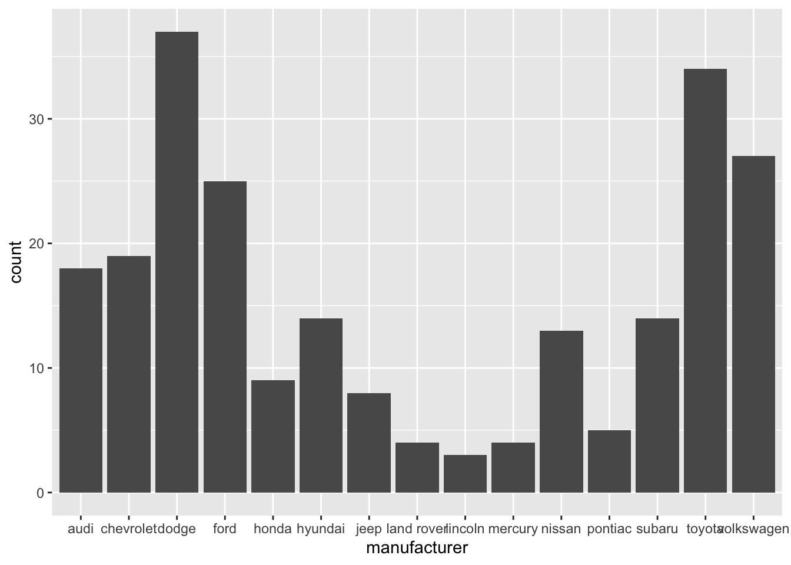
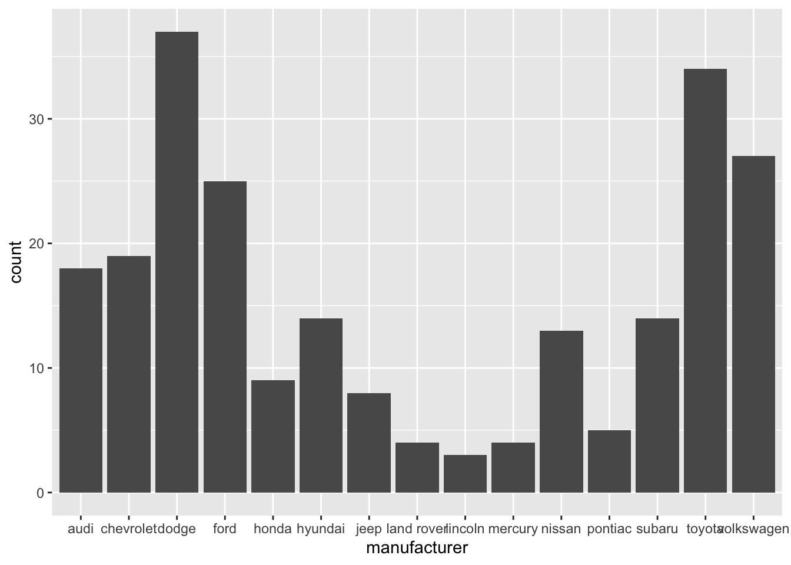
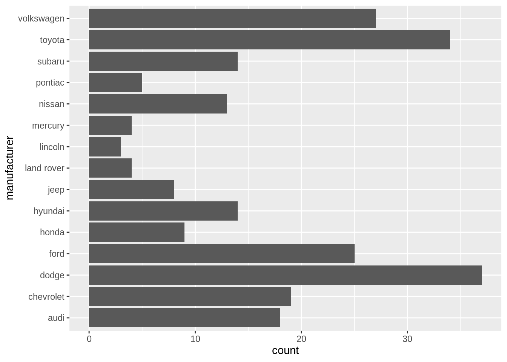
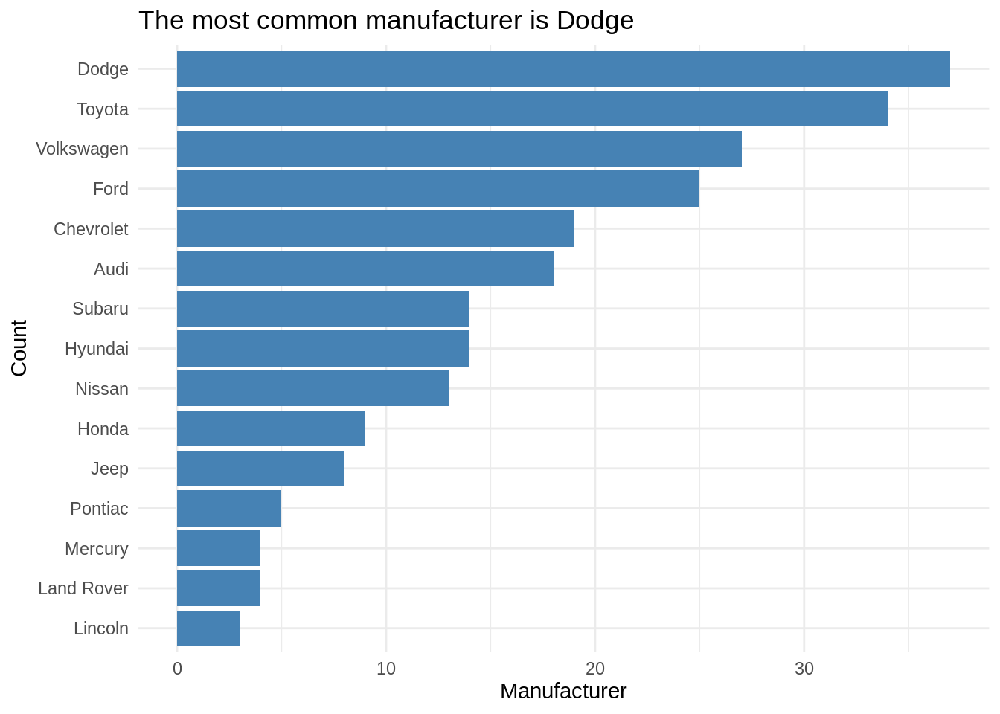

ggplot(data = mpg, aes(x = manufacturer)) +
geom_bar()
Ask questions if any of the expectations are unclear.
Code: In your write up your code should be hidden (echo = FALSE) so that your document is neat and easy to read. However your document should include all your code such that if I re-knit your qmd file I should be able to obtain the results you presented.
Merge conflicts will happen, issues will arise, and that’s fine! Commit and push often, and ask questions when stuck.
Make sure each team member is contributing, both in terms of quality and quantity of contribution (we will be reviewing commits from different team members).
All team members are expected to contribute equally to the completion of this assignment and group assessments will be given at its completion - anyone judged to not have sufficient contributed to the final product will have their grade penalized. While different teams members may have different backgrounds and abilities, it is the responsibility of every team member to understand how and why all code and approaches in the assignment works.
{r set-up, include = FALSE} to suppress this set up code.knitr::opts_chunk$set(echo = FALSE,
warning = FALSE,
message = FALSE)Resize plots and figures, so you have more space for the narrative.
Arrange plots in a grid, instead of one after the other. This is especially useful when displaying plots for exploratory data analysis and to check assumptions.
If you’re using ggplot2 functions, the patchwork package makes it easy to arrange plots in a grid. See the documentation and examples here.
Be sure all plot titles and axis labels are visible and easy to read.
❌ NO! The x-axis is hard to read because the names overlap.
ggplot(data = mpg, aes(x = manufacturer)) +
geom_bar()
✅ YES! Names are readable
ggplot(data = mpg, aes(y = manufacturer)) +
geom_bar()
mpg %>%
count(manufacturer) %>%
mutate(manufacturer = str_to_title(manufacturer)) %>%
ggplot(aes(y = fct_reorder(manufacturer,n), x = n)) +
geom_bar(stat = "identity", fill = "steelblue") +
labs(x = "Manufacturer",
y = "Count",
title = "The most common manufacturer is Dodge") +
theme_minimal() 
Use the kable function from the knitr package to neatly output all tables and model output. This will also ensure all model coefficients are displayed.
digits argument to display only 3 or 4 significant digits.caption argument to add captions to your table.model <- lm(mpg ~ hp, data = mtcars)
tidy(model) %>%
kable(digits = 3)| term | estimate | std.error | statistic | p.value |
|---|---|---|---|---|
| (Intercept) | 30.099 | 1.634 | 18.421 | 0 |
| hp | -0.068 | 0.010 | -6.742 | 0 |
Don’t use variable names in your narrative! Use descriptive terms, so the reader understands your narrative without relying on the data dictionary.
Know your audience: Your report should be written for a general audience who has an understanding of statistics at the level of STA 210.
Avoid subject matter jargon: Don’t assume the audience knows all of the specific terminology related to your subject area. If you must use jargon, include a brief definition the first time you introduce a term.
Tell the “so what”: Your report and presentation should be more than a list of interpretations and technical definitions. Focus on what the results mean, i.e. what you want the audience to know about your topic after reading your report or viewing your presentation.
Tell a story: All visualizations, tables, model output, and narrative should tell a cohesive story!
Use one voice: Though multiple people are writing the report, it should read as if it’s from a single author. At least one team member should read through the report before submission to ensure it reads like a cohesive document.